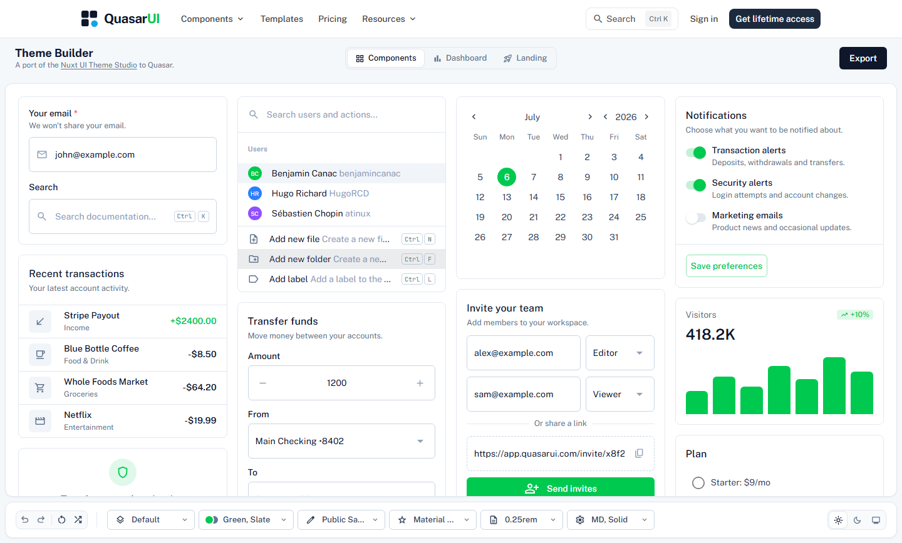
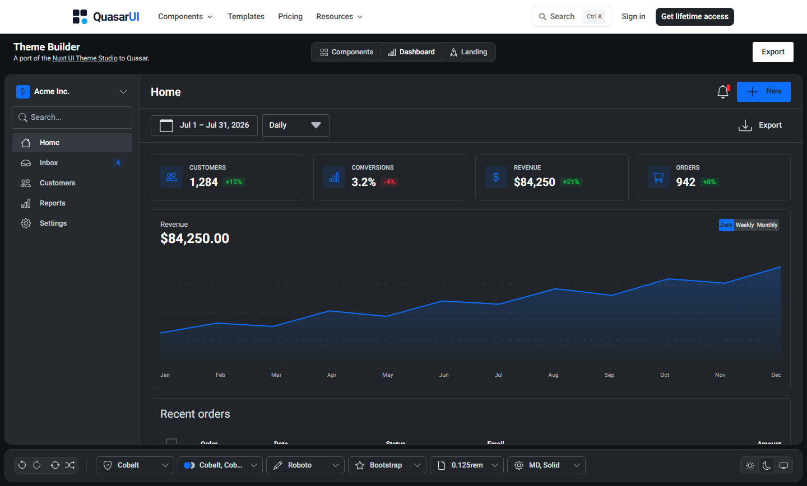
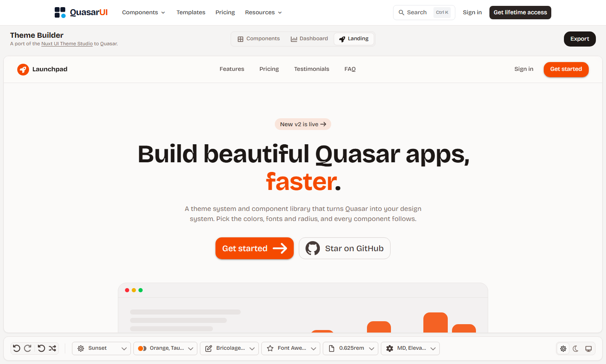
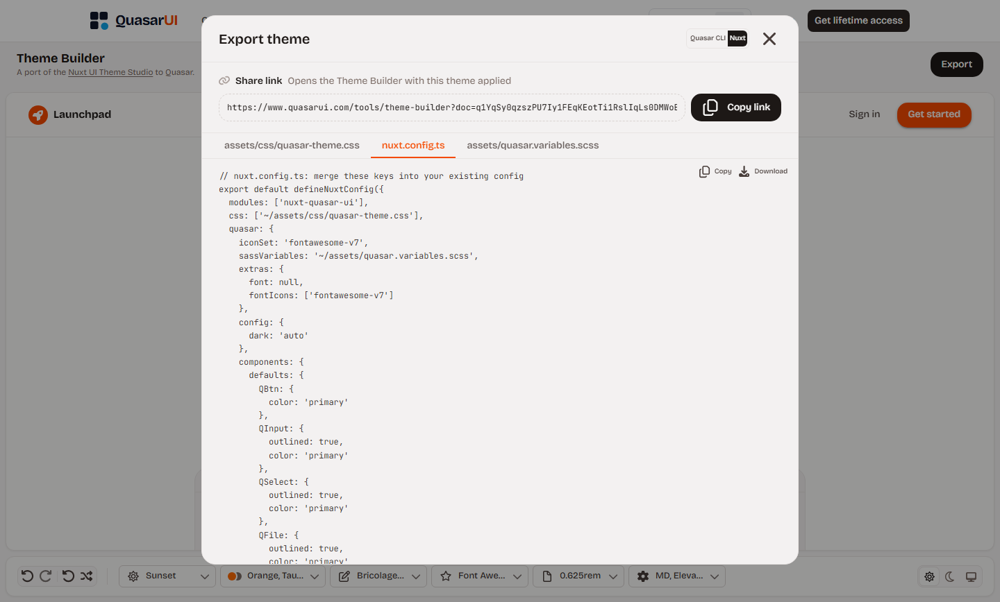

Quasar CLI
- Save
src/css/quasar-theme.css,src/boot/theme-defaults.jsandsrc/css/quasar.variables.scssinto your project. - Merge the keys from the exported
quasar.config.js(boot,css,extrasandframework) into your own config.
The free Quasar Theme Builder designs your whole theme in the browser. Start from a preset, build a Quasar color palette, set fonts, icons, radius and component defaults, and check your Quasar dark mode theme on real components. Then export the files for Quasar CLI or Nuxt.

Every change shows up at once on real Quasar components, in light and dark mode.
Default, Mono, Cobalt, Sky, Mint, Iris, Crimson, Coral, Sunset, Carbon, Bubblegum and Parchment.
Primary, secondary, accent, positive, negative, info, warning and a neutral scale, from a Tailwind palette, shade by shade, or with OKLCH curves.
Light and dark each get their own surface, text and border tokens. Preview either one, or follow the system.
Body, heading and code fonts, with size, letter spacing, line height and weights.
Material Symbols, Material Icons, Material Design Icons, Font Awesome, Bootstrap Icons, Ionicons and more.
One radius for the whole app, plus default size and button, card and input variants.
Components, Dashboard and Landing. Undo, redo, a random theme and reset are one click away.
Copy a share link that reopens your theme, or export the files for Quasar CLI or Nuxt.
Switch between a component gallery, an admin dashboard and a marketing landing page.



Click Export in the Theme Builder and pick your project type. Full steps are in the QuasarUI theming docs.
src/css/quasar-theme.css, src/boot/theme-defaults.js and src/css/quasar.variables.scss into your project.quasar.config.js (boot, css, extras and framework) into your own config.assets/css/quasar-theme.css and assets/quasar.variables.scss into your project.nuxt.config.ts (modules, css and quasar) into your own config.sass for the Sass variables: npm install -D sass.The CSS file owns dark mode, so keep dark: "auto" (or your own toggle) in the Quasar config.
Free, in the browser, with a live preview of every change.
The Theme Builder is a port of the Nuxt UI Theme Studio to Quasar. Its palette engine, curve editor and preset designs are adapted from Nuxt UI (MIT).